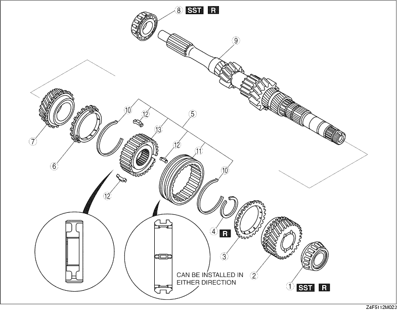

1. Disassemble in the order shown in the figure.

|
1 |
Bearing (4th gear end) |
|
2 |
4th gear |
|
3 |
4th synchronizer ring |
|
4 |
Retaining ring |
|
5 |
3rd/4th clutch hub component (See 3rd/4th Clutch Hub Component, 3rd Synchronizer Ring and 3rd Gear Disassembly Note) |
|
6 |
3rd synchronizer ring (See 3rd/4th Clutch Hub Component, 3rd Synchronizer Ring and 3rd Gear Disassembly Note) |
|
7 |
3rd gear (See 3rd/4th Clutch Hub Component, 3rd Synchronizer Ring and 3rd Gear Disassembly Note) |
|
8 |
Bearing (primary shaft end) |
|
9 |
Primary shaft gear |
|
10 |
Synchronizer key springs |
|
11 |
3rd/4th clutch hub sleeve |
|
12 |
Synchronizer keys |
|
13 |
3rd/4th clutch hub |
1. Remove the bearing using the SST.
1. Remove the retaining ring.
2. Remove the 3rd/4th clutch hub component, 3rd synchronizer ring, and 3rd gear using the SST.
1. Remove the bearing using the SST.